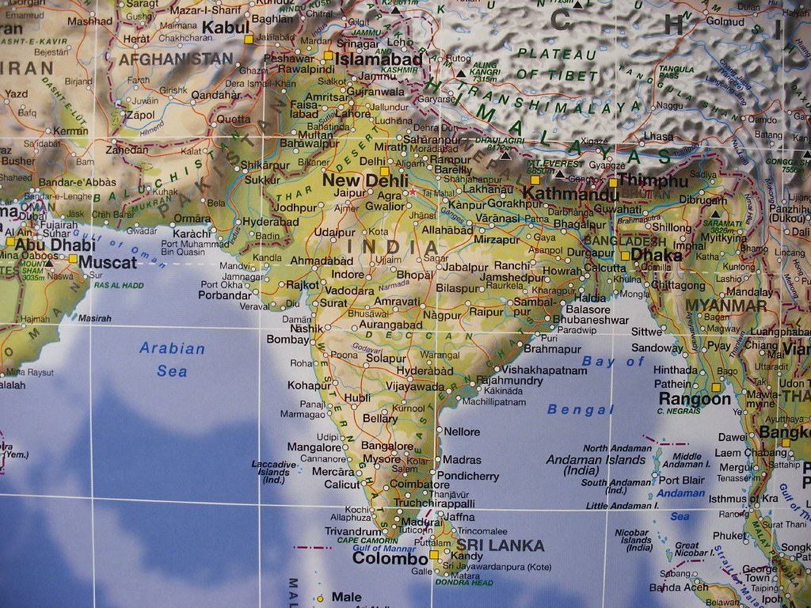

Famous Cities In India To Visit


.jpg)
Deeply traditional yet endlessly surprising, India is one of those destinations that ends up on every
traveler's bucket list at some point. They might dream of going to Agra to see the Taj Mahal in all its
glory or exploring the royal palaces scattered throughout Rajasthan. Others find themselves attracted to
the
jaw-dropping landscapes in Darjeeling and Rishikesh, or the postcard-perfect beaches in Goa.
There's also India's big cities—New Delhi, Mumbai, and Kolkata—each of which has its own distinctive
personality. It's impossible to get bored exploring the temples, markets, and colorful streets of
India's
biggest urban centers. The hardest part of traveling to India is figuring out exactly what to see on
your
journey.
Whether you're going on an epic backpacking trip or a luxe vacation, plan your adventure with this list
of
the best places to visit in India.
Interesting and Intriguing, India offers incredible holiday experiences through its cultural,
topography, and wildlife diversity. With these amazing and unique experiences, this south Asian country
conveniently finds its way into the world tourism map as one of the finest destinations for a holistic
vacation.

India establishes its identity as the country of architectural masterpieces, making it an ideal travel
destination to plan a heritage tour in the world. While Taj Mahal makes for the major draw on an India
tour, there are a plethora of monuments and edifices in every India travel guide displaying the fine
architecture and grandiose of different eras in the country.
The diverse Indian topography adorned with the impressive Himalayas; long stretches of coastline;
expansive hot, cold and white salt deserts; dense forests; alpine meadows and lakes; and scenic
waterfalls pique the tourists’ interest.
Along with the best nature sightseeing tours, India offers an opportunity to visitors to have a little
adventure of their own. The numerous spell-binding and less-trodden trails give trekking tour
opportunities in South Asia unlike any other.
India Tours offers a chance to explore its biodiversity in the country's many national parks and
wildlife reserves. An enthralling experience entails in the India wildlife tour packages that take
tourists to the habitats of Royal Bengal Tigers, one-horned rhinos, and snow leopards amongst many rare,
endangered, and unique species of flora and fauna.